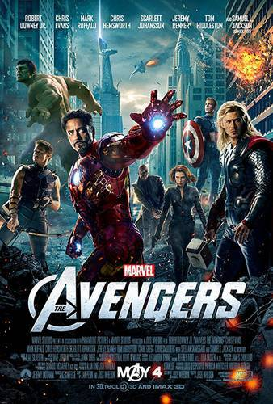
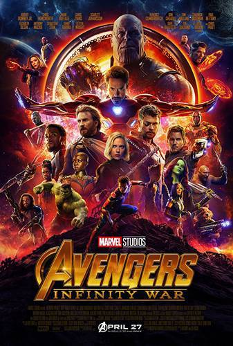
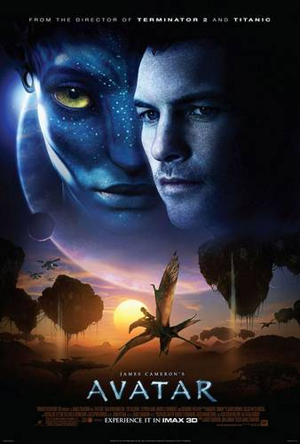

Os maiores sucessos de todos os tempos
Com Avatar no topo: confira as 10 maiores bilheterias da história
Vingadores: Ultimato e Titanic fecham o pódio
Avatar segue sendo o filme com maior bilheteria global da história (sem ajuste de inflação). Após um breve período em que Vingadores: Ultimato ficou no topo da lista, o longa de James Cameron recuperou a primeira posição com um relançamento especial nos cinemas.
10. Os Vingadores (2012)
Arrecadação total: US$ 1,518 bilhão Arrecadação nos EUA: US$ 623,35 milhões (41%) Arrecadação internacional: US$ 895,45 milhões (59%) Arrecadação no Brasil: US$ 63,9 milhões Arrecadação na China: US$ 86,3 milhões Custo de produção: US$ 220 milhões
9. O Rei Leão (2019)

Arrecadação total: US$ 1,662 bilhão Arrecadação nos EUA: US$ 543,63 milhões (32,8%) Arrecadação internacional: US$ 1,119 bilhão (67,2%) Arrecadação no Brasil: US$ 69,48 milhões Arrecadação na China: US$ 120,44 milhões Custo de produção: US$ 260 milhões
8.JURASSIC WORLD: O MUNDO DOS DINOSSAUROS (2015)

Arrecadação total: US$ 1,67 bilhão Arrecadação nos EUA: US$ 652,27 milhões (39%) Arrecadação internacional: US$ 1,018 bilhão (61%) Arrecadação no Brasil: US$ 29 milhões Arrecadação na China: US$ 228,74 milhões Custo de produção: US$ 150 milhões
7. HOMEM-ARANHA: SEM VOLTA PARA CASA (2021)

Arrecadação total: US$ 1,832 bilhão Arrecadação nos EUA: US$ 772,17 milhões (42,2%) Arrecadação internacional: US$ 1,060 bilhão (57,8%) Arrecadação no Brasil: US$ 55,4 milhões Arrecadação na China: Não lançado no país Custo de produção: US$ 200 milhões
6. VINGADORES: GUERRA INFINITA (2018)
Arrecadação total: US$ 2,048 bilhões Arrecadação nos EUA: US$ 678,81 milhões (33.2%) Arrecadação internacional: US$ 1,36 bilhão (66.8%) Arrecadação no Brasil: US$ 66,64 milhões Arrecadação na China: US$ 359,54 milhões Custo de produção: US$ 400 milhões (dividido com Vingadores: Ultimato)
5. STAR WARS: O DESPERTAR DA FORÇA (2015)

Arrecadação total: US$ 2,069 bilhões Arrecadação nos EUA: US$ 936,66 milhões (45,3%) Arrecadação internacional: US$ 1,13 bilhão (54,7%) Arrecadação no Brasil: US$ 27,81 milhões Arrecadação na China: US$ 124,15 milhões Custo de produção: US$ 245 milhões
4. TITANIC (1997)

Arrecadação total: US$ 2,245 bilhões Arrecadação nos EUA: US$ 672,44 milhões (30%) Arrecadação internacional: US$ 1,573 bilhão (70%) Arrecadação no Brasil: US$ 70,46 milhões Arrecadação na China: US$ 145 milhões Custo de produção: US$ 200 milhõe
3. AVATAR: O CAMINHO DA ÁGUA (2022)
Arrecadação total: US$ 2,247 bilhões Arrecadação nos EUA: US$ 659 milhões Arrecadação internacional: US$ 1,588 bilhão Arrecadação no Brasil: US$ 45,32 milhões Arrecadação na China: US$ 243,84 milhões Custo de produção: US$ 250 milhões
2. VINGADORES: ULTIMATO (2019)

Arrecadação total: US$ 2,797 bilhões Arrecadação nos EUA: US$ 858,3 milhões (30,7%) Arrecadação internacional: US$ 1,939 bilhão (69,3%) Arrecadação no Brasil: US$ 85,66 milhões Arrecadação na China: US$ 614,3 milhões Custo de produção: US$ 400 milhões (dividido com Vingadores: Guerra Infinita
1. AVATAR (2009)
Arrecadação total: US$ 2,847 bilhões Arrecadação nos EUA: US$ 760,5 milhões (26,7%) Arrecadação internacional: US$ 2,086 bilhões (73,3%) Arrecadação no Brasil: US$ 58,21 milhões Arrecadação na China: US$ 204 milhões Custo de produção: US$ 237 milhões